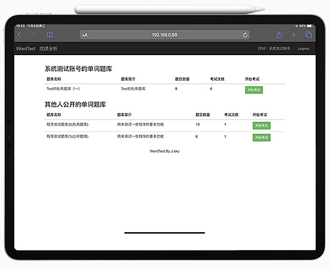
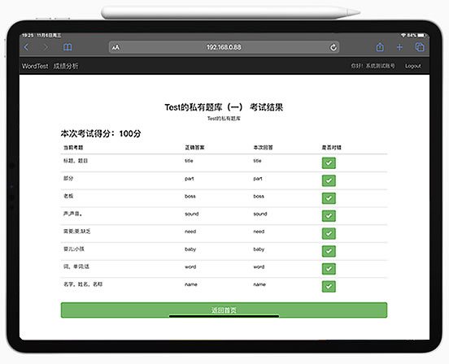
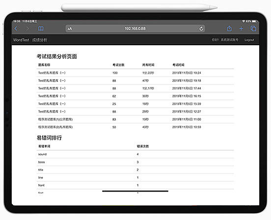
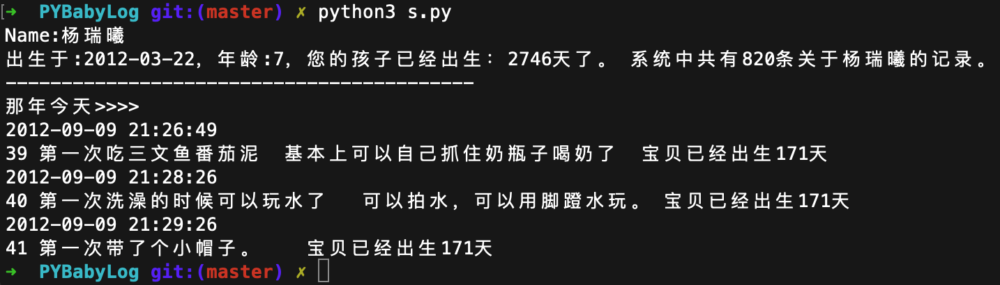
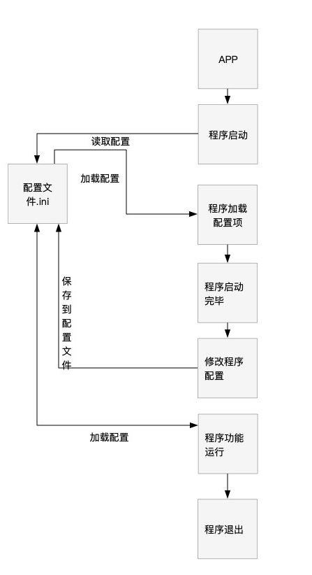
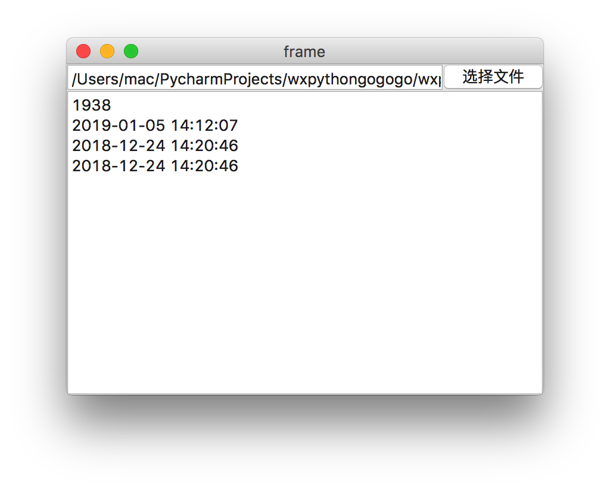

基于Django构建的小学生英文单词背写检测考试系统。
作者:J.sky 发布时间:2019-11-07 16:10:19 标签: 站长源创
PyWordTest

介绍
孩子的学习总是让父母担忧，英语学习也是让家长的头疼之事，做为程序员老爸不能整天忙于编程而忽视了孩子的教育，我们也要搞点事情。孩子英文单词到底背的怎么样了？别怕，用PyWordTest,创建题库，轻松搞定孩子的英语单词拼写情况。
> 本软件非英语单词学习软件，只是通过在线答题来检测孩子对单词拼写的掌握。
软件通过在线考试，记录考试结果及每个单词的拼写对错情况，最后通过一些算法分析孩子对单词拼写熟练度。
通过易错单词了解孩子哪些单词没有掌握，通过自建题库加强孩子对生疏单词的反复练习，更多功能还在研发中。
程序截图：




软件架构
基于Django构建的小学生英文单词背写检测考试系统。
环境需求： python (3.6.1) Django (2.2.7) Pillow
安装教程
进入程序目录后，运行python3 manage.py runserver
后台管理地址http://127.0.0.1:8000/admin/
管理员登陆:
用户名：admin 密码：17python.com
前台地址http://127.0.0.1:8000/
使用说明
程序已经采集了近1000小学生常用单词，后台可以根据自己的需要进行添加题库进行测试。
建议新建一个帐号用来考试建题库使用。
参与贡献
非常欢迎有想法的程序员参与提交代码，程序还很不完善！希望大家多多参与！
源码下载：
PYBabyLog记录孩子成长过程的日记
作者:J.sky 发布时间:2019-09-29 00:15:30 标签: 站长源创
前言
岁月如风，唯有此忆。 任凭时光匆匆，记录点点滴滴。
当爸爸了，就多陪陪孩子，有事没事的记些与孩子在一起的时光，不要总把心思放在程序编码上，也多陪陪孩子！
做了那么多的程序，是时候为孩子做个数据库，也许将来某一天你也会翻翻看看。
PYBabyLog的前身是 BabyLog(Java开发版)
是用来记录孩子成长过程的日记，她包括：日记，语言，认知等，还包括身高，体重，并使用图表展示。
PYBabyLog
PYBabyLog使用Python开发的终端版本，其增删改查的操作都是在终端进行的，大大的节省了程序员老爹的宝贵时间。
采用Python+MySQL+argparse技术开发的全终端操作软件。
可以说编程新手下载随便看看都能看懂，软件功能非常简单，但意义非凡。
本程序数据库和BabyLog(Java开发版)通用，可以用来展示数据。 当然牛逼的你可以自己制作更威猛的展示，最好能提交一份代码给我好吗？
界面截图


安装方法
1.下载程序所有文件，并建立mysql数据库，导入下边的sql文件构建数据库数据库构建文件
2.修改DbHelp.py中的MySQL的连接配置项即可
终端版操作命令简介
整理中。。。。。
x.py -h 就都出来了。
写在结尾
其实有很多话想说，估计很多程序员都有了自己的孩子，记录一些和孩子在一起的时光吧，那将是你自己最好的回忆。
若给各位大虾能提交些代码或是有好的建议，非常欢迎！
程序源码下载：
如何在Python程序中使用配置文件.ini(ConfigParser)
作者:J.sky 发布时间:2019-06-18 15:29:01 标签: Python基础
引言
在Python程序的编写中，我们经常要为程序配置一个配置文件，有了配置文件，可以记录一些应用的参数配置，方便下次使用时直接调用。
那么如何为自己的Python应用制作一个配置文件并方便的使用呢？这篇博文就是用来讨论这个简单的问题的。
本博文仅为作者对配置文件使用的一些见解，错误难免，如有问题请指教。
相关链接： PythonINI配置文件读写的简单方法
本文重点讨论如何在程序中使用配置文件，ConfigParser类的具体使用，请参考上文。
需求
前一阵子做了个口算题的生成的应用，但是每次打开应用时都是加载的程序默认的参数，非常不方便，所以就要考虑为程序添加一个配置文件。 具体需求如下：
- 保存程序设置参数
- 功能使用配置文件的参数
- 组织以上功能封装成为一个类，方便以后功能的扩展。
分析
先上一个配置文件的工作流程图

通过流程图我们可以总结出配置文件类中需要的方法：
- 创建(若ini文件不存在)及加载本地配置文件
- 程序加载配置项参数
- 修改参数的时候保存配置项到ini文件
- 整理配置项参数为程序功能所用。
构建APPconfig类
首先导入必须的包：
import os
from configparser import ConfigParser
然后确定ini配置文件的物理位置，这里可以引用Django配置文件加载的方法。
#ini程序所在目录，也是当前程序的根目录
BASE_DIR = os.path.dirname(os.path.abspath(__file__))
#INI文件地址
INI_PATH = os.path.join(BASE_DIR, 'config.ini')
创建INI文件
若程序是首次启动，可以判断配置文件ini是否存在，若不存在可以创建一个带有默认数据参数的配置文件。
为类添加一个方法def create_ini(self)，此方法用来创建配置文件ini。
当在类启动方法中创建了ConfigParser对象后，就可以利用这个对象来编辑修改配置文件了。
加载及保存配置文件
若文件存在，即可直接加载了。
def readINI(self):
""" ini文件读取，返回一个INI配置对象
或是用来更新内存中的配置文件数据
"""
self.c.read(self.INI_PATH, encoding='utf-8')
创建一个方法，用来读取配置文件，因为在程序运行中需要随时加载更新内存中的参数，所以弄个方法存在也是必要的。
有读取了，我们还需要保存参数到配置文件里，在建一个保存的方法：
def saveINI(self):
'''保存或是更新ini文件'''
with open(self.INI_PATH, mode='w', encoding='utf-8') as ini:
self.c.write(ini)
这样，只要修改了参数，结尾就可以调用这个方法来保存配置文件。
修改并保存配置文件参数
为每一个参数指定一个方法，用来修改并保存当前参数到配置文件，当触发需要修改参数的事件是，直接调用当前方法即可修改配置文件里对应的参数了。
范例：
def saveNumber(self,number):
'''保存口算题个数设置数据'''
self.c.set('config','number',number)
self.saveINI()
读取参数
当创建完ConfigParser对象后，就可以使用该对象方便的操作配置文件的读取和保存了，具体方法这里不再敷衍，可以参考PythonINI配置文件读写的简单方法
也可以单独建立一个方法，用来返回一组数据供程序的功能使用。
有关配置文件的讨论就到此为止，以上也只是自己的一些浅显理解，详细代码请参考以下源码。
本文源码下载：
写在我的博客PV10万时：聊聊编程与画画
作者:J.sky 发布时间:2019-05-14 09:11:29 标签: 站长吐槽

转眼间我的blogPV流量已经达到10万+了，2017年8月25日 01:09，我发布了网站更新记录，至此blog运行已有快二年了，没想到PV会达到10万。
回想学习Python大约也有二年多了，这一路走来也是蛮辛苦的，自学需要自己填坑补洞修bug，痛苦与快乐并存吧。
贴几张近作，显吧一下吧


为什么要提到画画，去年的夏天给孩子报了美术班，然后自己也就随便画画，然后就一发不可收拾，坚持画画一直到现在，感触也是蛮多的。
编程和画画的思考方式在某些方面还是有相同点的，例如编程的架构就好比画画的草稿，草稿打好了才可以细致的刻画。若程序的需求本身是一幅画，那么打好草稿，细致刻画细节，就可以使程序本身更人性化，更符合预期的要求。有的时候我就觉得，程序员本身真的应该的体验一下绘画带来的乐趣。
自学画画一年感觉要比编程10年前的成就感强很多，这些年编程没写过多少像样的应用，五个手指都能算出来，或许编程要比绘画更严谨，更需要思考。
未来还有很多打算，包括编程初期的一些梦想都想去实现，比如开发一款游戏，自己原画角色，场景，并利用现有的游戏框架编写成型。完成现有的程序代码的编写，继续优化维护，继续坚持画画强化绘画技能，或许能力的提高会更加丰富原有的梦想。
还有三年的时候blogPV达到百万（是不是有点飘了？），下半年继续更新blog，继续学习Python Django PYgame等。
wxPython编程学习笔记(10)wx.FileDialog文件选择框
作者:J.sky 发布时间:2019-01-05 14:41:02 标签: Python GUI

wx.FileDialog文件选择框
'FileDialog'是一个文件选择框，我们可以根据弹出框选择文件，确定后返回该文件的地址。
创建
dlg = wx.FileDialog(parent, message=None, defaultDir=None, defaultFile=None, wildcard=None, style=None, pos=None, size=None, name=None)
dlg.GetPath()#返回文件地址字符串
其打开方式和其它弹出窗口一样有模态和非模态，当按下确认按钮后，返回一个文件地址字符串。
我做了一个测试，代码下边跑跑看吧，希望能帮助到你。
import wx
import os
import time
class MyFrame(wx.Frame):
def __init__(self, *args, **kwds):
kwds["style"] = kwds.get("style", 0) | wx.DEFAULT_FRAME_STYLE
wx.Frame.__init__(self, *args, **kwds)
self.SetSize((400, 300))
self.text_ctrl_1 = wx.TextCtrl(self, wx.ID_ANY, "")
self.button_1 = wx.Button(self, wx.ID_ANY, u"选择文件")
self.text_ctrl_2 = wx.TextCtrl(self, wx.ID_ANY, "")
self.__set_properties()
self.__do_layout()
def __set_properties(self):
self.SetTitle("frame")
self.button_1.Bind(wx.EVT_BUTTON,self.onButton_1)
def __do_layout(self):
sizer_1 = wx.BoxSizer(wx.VERTICAL)
sizer_3 = wx.BoxSizer(wx.HORIZONTAL)
sizer_2 = wx.BoxSizer(wx.HORIZONTAL)
sizer_2.Add(self.text_ctrl_1, 1, wx.ALL, 0)
sizer_2.Add(self.button_1, 0, 0, 0)
sizer_1.Add(sizer_2, 0, wx.ALL | wx.EXPAND, 0)
sizer_3.Add(self.text_ctrl_2, 1, wx.ALL | wx.EXPAND, 0)
sizer_1.Add(sizer_3, 1, wx.ALL | wx.EXPAND, 0)
self.SetSizer(sizer_1)
self.Layout()
def onButton_1(self,e):
print("按钮事件")
dlg = wx.FileDialog(self, message="选择一个文件", defaultDir=os.getcwd(), style=wx.FD_OPEN)
ret = dlg.ShowModal()
if ret == wx.ID_OK:
print(dlg.GetPath()) # 文件地址
self.text_ctrl_1.SetValue(dlg.GetPath())
fp = os.path.join(dlg.GetPath()) # 组装文件地址
###输出到弹出信息窗口的字符拼装。
retstr = str(self.get_FileSize(fp)) + "\n" + self.get_FileAccessTime(fp) + "\n" + self.get_FileCreateTime(
fp) + "\n" + self.get_FileModifyTime(fp)
self.text_ctrl_2.SetValue(retstr)
dlg.Destroy()
# 把时间戳转化为时间: 1479264792 to 2016-11-16 10:53:12
def TimeStampToTime(self, timestamp):
timeStruct = time.localtime(timestamp)
return time.strftime('%Y-%m-%d %H:%M:%S', timeStruct)
# 获取文件的大小,结果保留两位小数，单位为MB
def get_FileSize(self, filePath):
fsize = os.path.getsize(filePath)
return fsize
# 获取文件的访问时间
def get_FileAccessTime(self, filePath):
t = os.path.getatime(filePath)
return self.TimeStampToTime(t)
# 获取文件的创建时间
def get_FileCreateTime(self, ilePath):
t = os.path.getctime(ilePath)
return self.TimeStampToTime(t)
# 获取文件的修改时间
def get_FileModifyTime(self, filePath):
t = os.path.getmtime(filePath)
return self.TimeStampToTime(t)
class MyApp(wx.App):
def OnInit(self):
self.frame = MyFrame(None, wx.ID_ANY, "")
self.SetTopWindow(self.frame)
self.frame.Show()
return True
if __name__ == "__main__":
app = MyApp(0)
app.MainLoop()